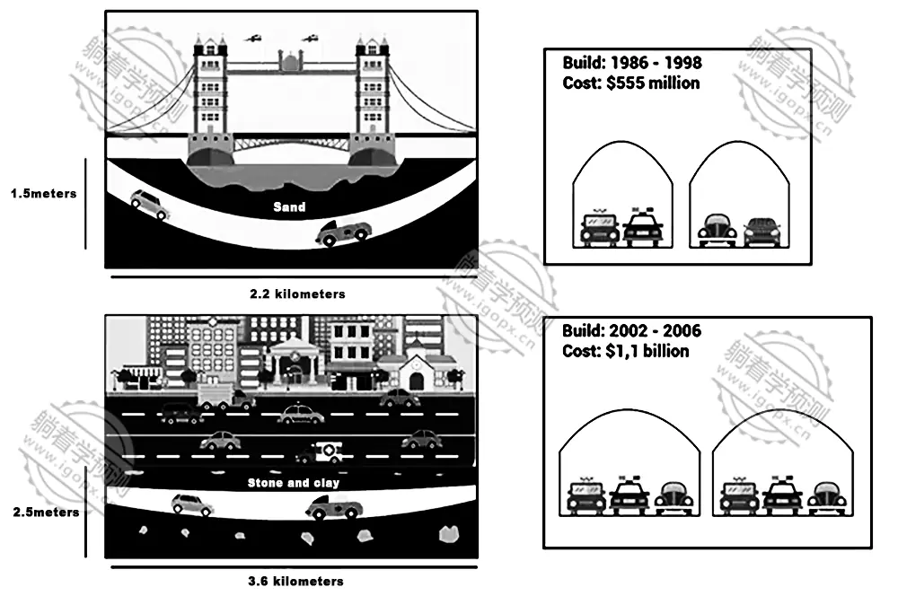

The diagrams below give information about two road tunnels in two Australian cities.

The maps compare two tunnel construction projects in terms of time, cost, depth, length, and traffic capacity.
Overall, both tunnels took a considerable amount of time to complete, with the second tunnel being finished in a much shorter period despite its greater complexity. Additionally, there is a notable difference in cost between the two projects.
The first tunnel was constructed between 1986 and 1998, spanning 12 years. It is located below sea level, beneath a bridge, and costs 555 million dollars. Key specifications include a depth of 1.5 meters, a total length of 2.2 kilometers, and a capacity of two car lanes.
In contrast, the second tunnel is significantly more advanced. It was completed in just four years, from 2002 to 2006, at a cost of 1.1 billion dollars—twice as much as the first. Situated beneath a busy road, it reaches a depth of 2.5 meters and stretches for 3.6 kilometers. This tunnel supports three lanes of traffic in each direction.